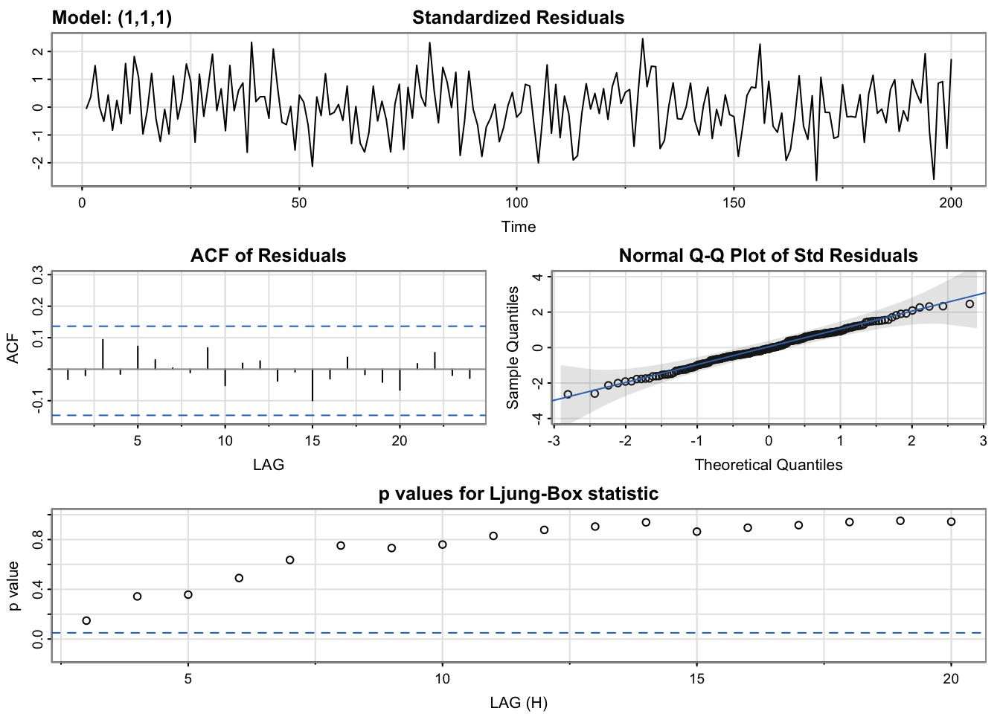
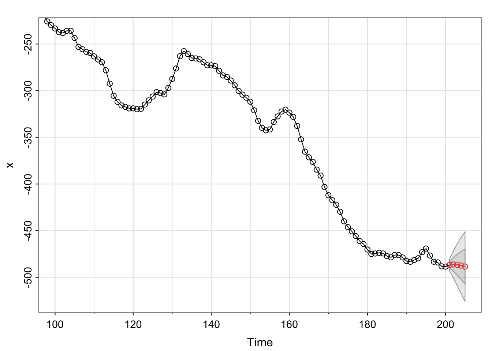

Chapter 16 Drift Term
16.1 Random Walk Model
A random walk model is simply an ARIMA(0,1,0):
\((1-B)x_t=w_t\implies x_t=x_{t-1}+w_t\)
where \(w_t \sim ind.(0, \sigma_w^2)\)
The name comes about through \(x_t\) being \(x_{t-1}\) plus a random “movement”.
A drift term \(\delta\) can be added to the model,
\(x_t=\delta+x_{t-1}+w_t\)
This can be rewritten then as a cumulative sum,
\[x_t=\delta+(\delta+x_{t-2}+w_{t-1})+w_t\\ =2\delta+x_{t-2}+w_{t-1}+w_t\\ =2\delta+(\delta+x_{t-3}+w_{t-2})+w_{t-1}+w_t\\ =3\delta+x_{t-3}+w_{t-2}+w_{t-1}+w_t\\ \vdots\\ x_t=\delta t+\sum_{j=1}^{t}w_j\]
One can see that the drift term creates a non-stochastic trend in the series (i.e., allows \(x_t\) to drift away from 0).
Notice the random walk model with a drift term is not stationary because the mean is a function of time.
\(E(x_t)=\delta t +\sum_{j=1}^{t}E(w_j)=\delta t\)
16.2 Estimating the drift term
When arima() is used with differencing, the include.mean argument is set to FALSE. This is because differencing removes the trend and allows for the differenced series to have a mean of 0. Note that even if you say include.mean = TRUE, there will be no “mean” estimated. Here’s what R’s arima() help says for the include.mean argument,
include.meanShould the ARIMA model include a mean term? The default is TRUE for undifferenced series, FALSE for differenced ones (where a mean would not affect the fit nor predictions).
As shown in the random walk model example, there may be times where you do want to estimate a drift term, like \(\delta\), still. This leads to an ARIMA model with the drift term,
\[(1-\phi_1B-\phi_2B^2-...-\phi_pB^p)(1-B)^dx_t=\\ \delta+(1+\theta_1B+\theta_2B^2+...+\theta_qB^q)w_t\\ \iff \phi(B)(1-B)^dx_t=\delta+\theta(B)w_t\]
Most time series textbooks will not include the constant term in the model when there is differencing. For example, Wei’s textbook says (referring to \(\delta\) as \(\theta_0\)),
We assume that \(\theta_0 = 0\), unless it is clear from the data or the nature of the problem that a deterministic [non-stochastic] trend is really needed.
This is why R does not include the possible estimation of \(\delta\) in the arima() function.
If you did want to include \(\delta\), there are a few ways to estimate it.
- Use
xreg = 1:length(x)inarima()where x contains the data used with thearima().
- Use the
sarima()andsarima.for()functions in theastsapackage for fitting the model and forecasting, respectively. Thesarima()name comes from an extension of the ARIMA model that will be discussed later in our course to allow for seasonality. - Do all differencing needed BEFORE invoking
arima(). Used = 0inarima()andinclude.mean = TRUE.
Below are examples of their implementations. Shumway and Stoffer also include an example when finding the best model for their GNP data.
Example 16.1 ARIMA(1,1,1) with \(\phi_1=0.7, \theta_1=0.4, \sigma_w^2=9, n=200\) (arima111_sim.R)
Of course, \(\delta\) should be 0 for this data set since the data were simulated directly from an ARIMA(1,1,1). However, we can still investigate what would happen if \(\delta\) was estimated.
First, the original model’s fit has been reproduced below.
arima111 <- read.csv(file = "arima111.csv")
x <- arima111$xmod.fit <- arima(x = x, order = c(1, 1, 1))
mod.fit##
## Call:
## arima(x = x, order = c(1, 1, 1))
##
## Coefficients:
## ar1 ma1
## 0.6720 0.4681
## s.e. 0.0637 0.0904
##
## sigma^2 estimated as 9.558: log likelihood = -507.68, aic = 1021.36#Forecasts 5 time periods into the future
fore.mod <- predict(object = mod.fit, n.ahead = 5, se.fit
= TRUE)
fore.mod## $pred
## Time Series:
## Start = 201
## End = 205
## Frequency = 1
## [1] -486.3614 -484.9361 -483.9784 -483.3348 -482.9023
##
## $se
## Time Series:
## Start = 201
## End = 205
## Frequency = 1
## [1] 3.091673 7.303206 11.578890 15.682551 19.534208The estimated model is
\((1 - 0.6720B)(1 - B)x_t = (1 + 0.4681B)w_t\) with \(\hat \sigma_w^2= 9.56\)
Next, the models are fit including an estimate of \(\delta\).
- Using
xreg = 1:length(x)inarima()where x contains the data
mod.fit2 <- arima(x = x, order = c(1, 1, 1), xreg =
1:length(x))
mod.fit2##
## Call:
## arima(x = x, order = c(1, 1, 1), xreg = 1:length(x))
##
## Coefficients:
## ar1 ma1 1:length(x)
## 0.6382 0.4826 -1.6847
## s.e. 0.0671 0.0894 0.8815
##
## sigma^2 estimated as 9.404: log likelihood = -506.03, aic = 1020.05\(\hat \delta=-1.6847, \sqrt{\hat Var(\hat \delta)}=0.8815, \hat \sigma_w^2=9.404\)
fore.mod2 <- predict(object = mod.fit2, n.ahead = 5,
se.fit = TRUE, newxreg = (length(x)+1):(length(x)+5))
fore.mod2## $pred
## Time Series:
## Start = 201
## End = 205
## Frequency = 1
## [1] -486.7318 -486.2243 -486.5100 -487.3020 -488.4169
##
## $se
## Time Series:
## Start = 201
## End = 205
## Frequency = 1
## [1] 3.066606 7.190241 11.284195 15.141661 18.709358Notice in our example,newxreg = (length(x)+1):(length(x)+5)) basically means t=201,…,205.
\(H_0: \delta=0\quad vs. \quad H_a: \delta \ne 0\)
Wald statistics: \(\frac{\hat \delta-0}{\sqrt{\hat Var(\hat \delta)}}=\frac{-1.6847}{0.8815}\)
# calculating wald statistics for hypothesis testing
mod.fit2$coef[3]/sqrt(mod.fit2$var.coef[3,3])## 1:length(x)
## -1.911036# surprisingly, we see delta ≠ 0 statistically significant1:length(x) ## [1] 1 2 3 4 5 6 7 8 9 10 11 12 13 14 15 16 17 18
## [19] 19 20 21 22 23 24 25 26 27 28 29 30 31 32 33 34 35 36
## [37] 37 38 39 40 41 42 43 44 45 46 47 48 49 50 51 52 53 54
## [55] 55 56 57 58 59 60 61 62 63 64 65 66 67 68 69 70 71 72
## [73] 73 74 75 76 77 78 79 80 81 82 83 84 85 86 87 88 89 90
## [91] 91 92 93 94 95 96 97 98 99 100 101 102 103 104 105 106 107 108
## [109] 109 110 111 112 113 114 115 116 117 118 119 120 121 122 123 124 125 126
## [127] 127 128 129 130 131 132 133 134 135 136 137 138 139 140 141 142 143 144
## [145] 145 146 147 148 149 150 151 152 153 154 155 156 157 158 159 160 161 162
## [163] 163 164 165 166 167 168 169 170 171 172 173 174 175 176 177 178 179 180
## [181] 181 182 183 184 185 186 187 188 189 190 191 192 193 194 195 196 197 198
## [199] 199 200Note the newxreg option used in predict() and the values that I put into it. The estimated model is
\((1 - 0.6382B)(1 - B)x_t = -1.6847 + (1 + 0.4826B)w_t\) with \(\hat \sigma_w^2=9.404\)
A Wald test was performed for Ho:\(\delta\) = 0 vs. Ha:\(\delta \ne\) 0, and, surprisingly, \(\delta\) is marginally significant. But we simulate our data with \(\delta=0\). This is an example of a type I error!
- The
astsapackage
library(astsa)
mod.fit.SS <- sarima(xdata = x, p = 1, d = 1, q = 1)## initial value 1.695478
## iter 2 value 1.257308
## iter 3 value 1.138015
## iter 4 value 1.128318
## iter 5 value 1.125569
## iter 6 value 1.124216
## iter 7 value 1.124166
## iter 8 value 1.124164
## iter 9 value 1.124163
## iter 10 value 1.124158
## iter 11 value 1.124158
## iter 12 value 1.124158
## iter 12 value 1.124158
## iter 12 value 1.124158
## final value 1.124158
## converged
## initial value 1.123918
## iter 2 value 1.123906
## iter 3 value 1.123903
## iter 4 value 1.123901
## iter 5 value 1.123901
## iter 6 value 1.123901
## iter 7 value 1.123901
## iter 7 value 1.123901
## iter 7 value 1.123901
## final value 1.123901
## converged
mod.fit.SS## $fit
##
## Call:
## arima(x = xdata, order = c(p, d, q), seasonal = list(order = c(P, D, Q), period = S),
## xreg = constant, transform.pars = trans, fixed = fixed, optim.control = list(trace = trc,
## REPORT = 1, reltol = tol))
##
## Coefficients:
## ar1 ma1 constant
## 0.6382 0.4826 -1.6847
## s.e. 0.0671 0.0894 0.8815
##
## sigma^2 estimated as 9.404: log likelihood = -506.03, aic = 1020.05
##
## $degrees_of_freedom
## [1] 196
##
## $ttable
## Estimate SE t.value p.value
## ar1 0.6382 0.0671 9.5105 0.0000
## ma1 0.4826 0.0894 5.4008 0.0000
## constant -1.6847 0.8815 -1.9110 0.0575
##
## $AIC
## [1] 5.12588
##
## $AICc
## [1] 5.126498
##
## $BIC
## [1] 5.192077names(mod.fit.SS)## [1] "fit" "degrees_of_freedom" "ttable"
## [4] "AIC" "AICc" "BIC"mod.fit.SS$fit$coef## ar1 ma1 constant
## 0.6381503 0.4825974 -1.6846517mod.fit.SS$fit$var.coef## ar1 ma1 constant
## ar1 0.004502355 -3.544069e-03 4.935340e-04
## ma1 -0.003544069 7.984741e-03 7.767688e-05
## constant 0.000493534 7.767688e-05 7.771103e-01The plot that includes information about the residuals will be discussed later in the course. The estimated model is
\((1 - 0.6382B)(1 - B)x_t = -1.6847 + (1 + 0.4826B)w_t\) with \(\hat \sigma_w^2=9.404\)
The forecasts are shown below. Use sarima.for to forecast.
save.for <- sarima.for(xdata = x, n.ahead = 5, p = 1, d
= 1, q = 1) 
save.for## $pred
## Time Series:
## Start = 201
## End = 205
## Frequency = 1
## [1] -486.7318 -486.2243 -486.5100 -487.3020 -488.4169
##
## $se
## Time Series:
## Start = 201
## End = 205
## Frequency = 1
## [1] 3.066606 7.190241 11.284195 15.141661 18.709358The envelope surrounding the forecasts represent \(\pm 1\) and \(\pm 2\) multiplied by \(\sqrt{Var(x_{n+m}-\tilde x^n_{n+m})}\)
- Perform the differencing BEFORE invoking
arima(), Used = 0inarima(), andinclude.mean = TRUE.
See the program for partial implementation. Methods #1 and #2 are easier, so these will be used in this course.
If you use method 3, you will forecast \(v_t=(1-B)^dx_t\), so your forecast is not in the scale of \(x_t\). This can be cumbersome.
#Do all differencing needed BEFORE invoking arima(). Use d = 0 in arima() and include.mean = TRUE.
x.diff <- diff(x = x, lag = 1, differences = 1)
mod.fit.diff <- arima(x = x.diff, order = c(1, 0, 1))
mod.fit.diff##
## Call:
## arima(x = x.diff, order = c(1, 0, 1))
##
## Coefficients:
## ar1 ma1 intercept
## 0.6382 0.4826 -1.6847
## s.e. 0.0671 0.0894 0.8815
##
## sigma^2 estimated as 9.404: log likelihood = -506.03, aic = 1020.05fore.mod.diff <- predict(object = mod.fit.diff, n.ahead = 5, se.fit = TRUE)
fore.mod.diff## $pred
## Time Series:
## Start = 200
## End = 204
## Frequency = 1
## [1] 1.7505015 0.5074891 -0.2857396 -0.7919387 -1.1149699
##
## $se
## Time Series:
## Start = 200
## End = 204
## Frequency = 1
## [1] 3.066606 4.606115 5.101633 5.290143 5.365013 #Problem with doing the above method is the need to get the undifferenced data back
# Would need to do "integrating"